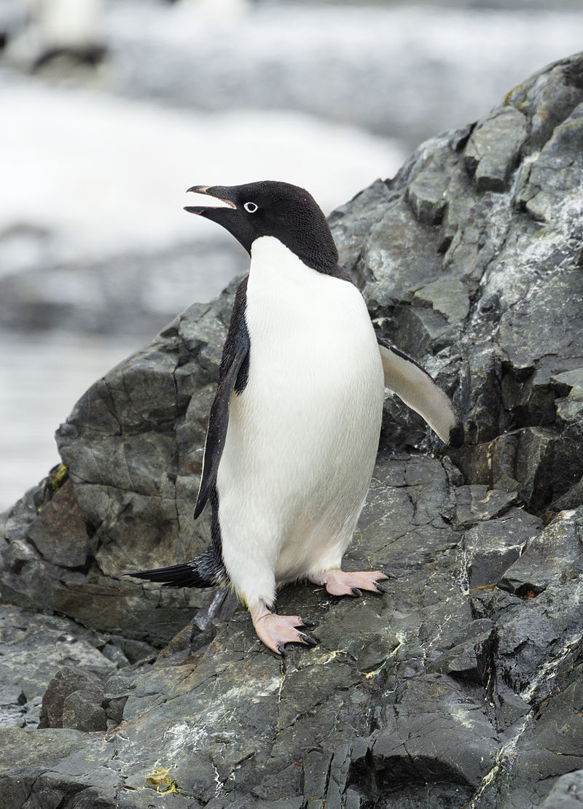
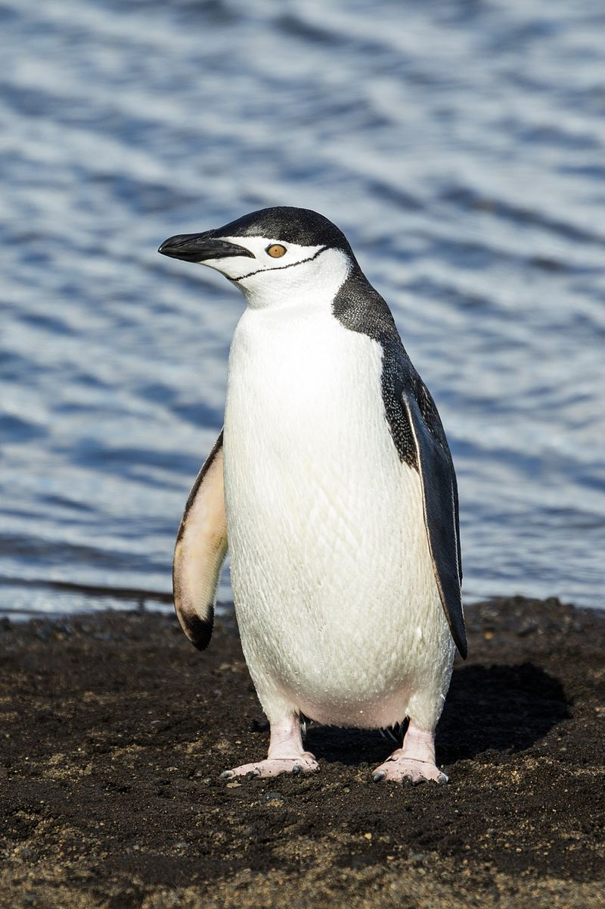
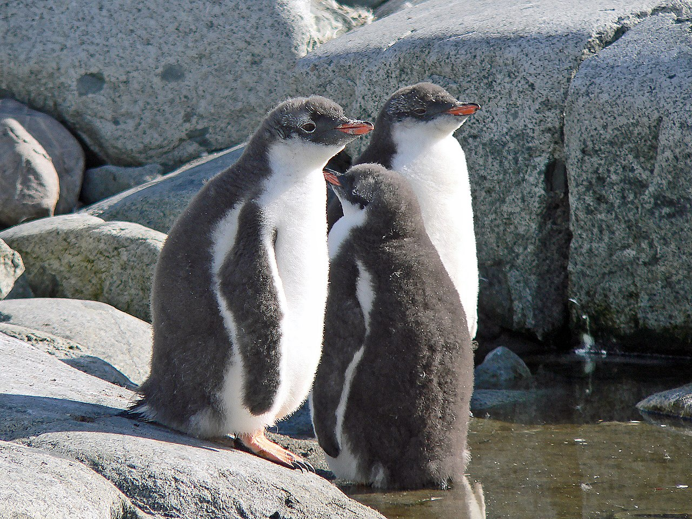

The genus Pygoscelis ("rump-legged") contains three living species of penguins collectively known as "brush-tailed penguins".
 The Adélie penguin (Pygoscelis adeliae) is a species of penguin common along the entire coast of the Antarctic continent, which is its only habitat. It is the most widely spread penguin species, as well as the most southerly distributed of all penguins, along with the emperor penguin. It is named after Adélie Land, in turn named for Adèle Dumont d'Urville, the wife of French explorer Jules Dumont d'Urville, who first discovered this penguin in 1840. Adélie penguins obtain their food by both predation and foraging, with a diet of mainly krill and fish.
 The chinstrap penguin (Pygoscelis antarcticus) is a species of penguin that inhabits a variety of islands and shores in the Southern Pacific and the Antarctic Oceans. Its name stems from the narrow black band under its head, which makes it appear as if it were wearing a black helmet, making it easy to identify. Other common names include ringed penguin, bearded penguin, and stonecracker penguin, due to its loud, harsh call.
 The gentoo penguin is easily recognized by the wide white stripe extending like a bonnet across the top of its head and its bright orange-red bill. It has pale whitish-pink webbed feet and a fairly long tail – the most prominent tail of all penguin species. Chicks have grey backs with white fronts. As the gentoo penguin waddles along on land, its tail sticks out behind, sweeping from side to side, hence the scientific name Pygoscelis, which means "rump-tailed". A close-up of head on the West Falkland Gentoos reach a height of 51 to 90 cm (20 to 35 in), making them the third-largest species of penguin after the emperor penguin and the king penguin. Males have a maximum weight of about 8.5 kg (19 lb) just before molting, and a minimum weight of about 4.9 kg (11 lb) just before mating. For females, the maximum weight is 8.2 kg (18 lb) just before molting, but their weight drops to as little as 4.5 kg (9.9 lb) when guarding the chicks in the nest. Birds from the north are on average 700 g (1.5 lb) heavier and 10 cm (3.9 in) taller than the southern birds. Southern gentoo penguins reach 75–80 cm (30–31 in) in length. They are the fastest underwater swimmers of all penguins, reaching speeds of up to 36 km/h (22 mph).[18] Gentoos are well adapted to extremely cold and harsh climates.